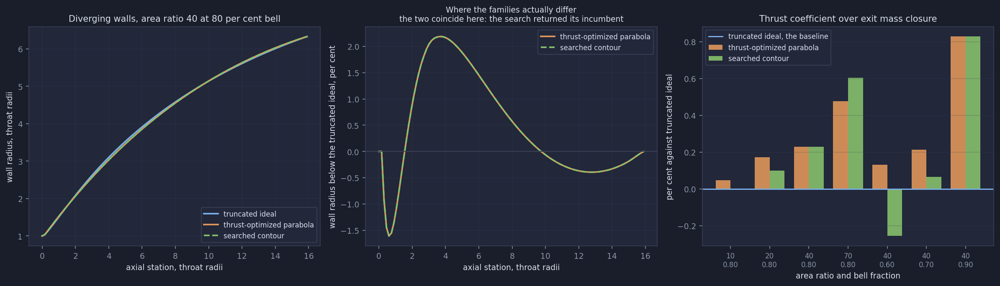
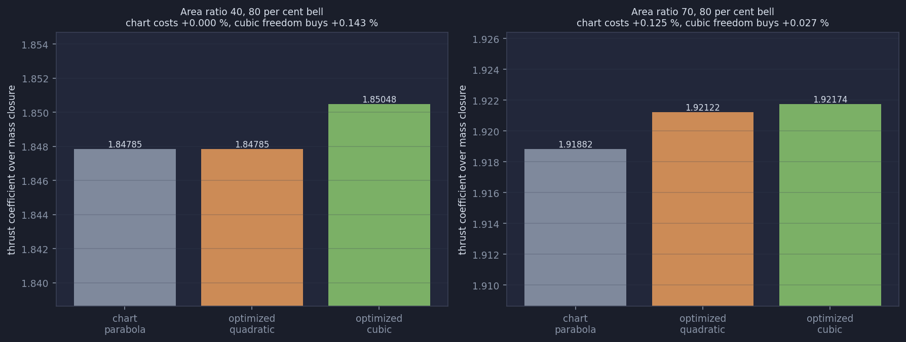
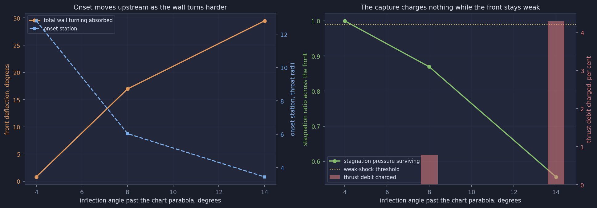
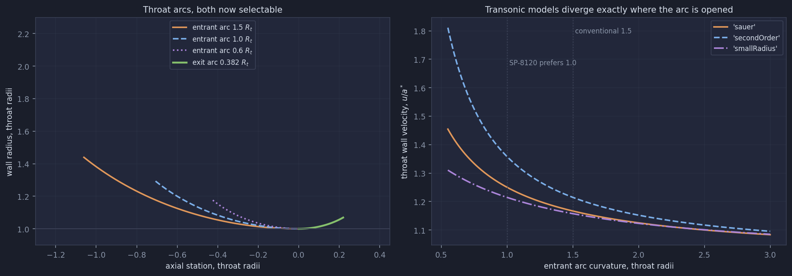
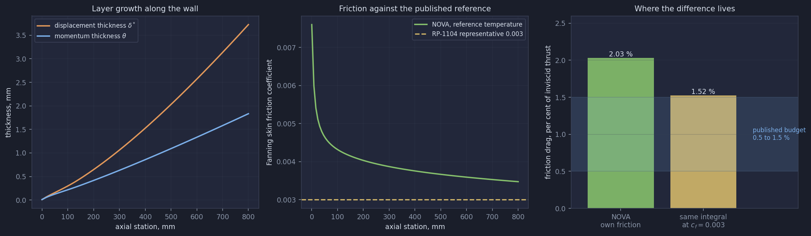
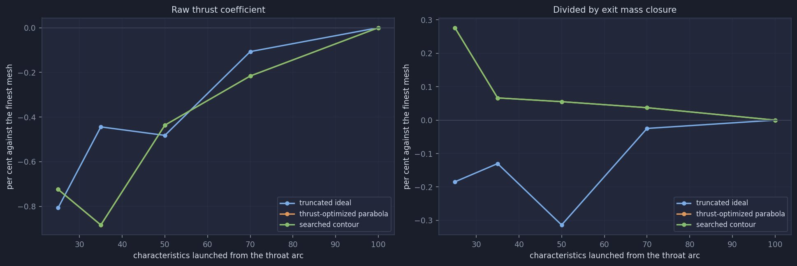

NOVA generates a truncated ideal contour, a thrust-optimized parabola and a thrust-optimized contour, each returning a fully populated solution so the cooling model, plume march and export chain read any of them unchanged. This report carries the measurements behind those three families, the throat and transonic models they share, the boundary layer that debits them, and the internal shock two of them can carry.
What is measured, and what each measurement rests on
How each wall is arrived at, and what the difference is worth
A family is defined by how its wall is found. The truncated ideal contour traces the wall as a streamline through a solved mesh and cuts it at the requested area ratio. The thrust-optimized parabola draws the wall first, from two chart angles, and marches the flow over it. The thrust-optimized contour draws, evaluates and redraws a cubic Bezier wall under an optimizer. The last two share a forward characteristics march over a wall handed to the solver, which the truncated ideal contour never needed.
All three deliver the same exit point, so the walls differ by about two per cent of radius in between. That is where the performance difference lives.

| Area ratio | Bell | Truncated ideal | Parabola | Searched contour | Search converged |
|---|---|---|---|---|---|
| 10 | 0.80 | baseline | +0.048 % | +0.001 % | yes |
| 20 | 0.80 | baseline | +0.171 % | +0.100 % | no |
| 40 | 0.80 | baseline | +0.229 % | +0.229 % | no |
| 70 | 0.80 | baseline | +0.477 % | +0.605 % | yes |
| 40 | 0.60 | baseline | +0.130 % | -0.256 % | no |
| 40 | 0.70 | baseline | +0.213 % | +0.066 % | no |
| 40 | 0.90 | baseline | +0.828 % | +0.828 % | no |
The parabola beats the truncated ideal contour at every design point, by 0.048 to 0.828 per cent. That is the one cross-family result here with an external expectation behind it, and it lands on SP-8120's quarter of a per cent.
Separating two differences the cross-family sweep can only report as a sum
A searched cubic beating the chart parabola answers two questions at once. The cubic family may genuinely be better, or the chart reading may simply be poor: it is a digitization of a figure, it carries a recorded transcription error, and SP-8120 marks it extrapolated above area ratio 50.
The cubic family contains the quadratic one exactly. Every quadratic Bezier is the cubic whose control points sit two thirds of the way along the same tangents, so the optimizer can be confined to the surface on which every wall is still a parabola: the two wall angles become the design variables and the tensions follow from them. Three walls then separate the two effects.

| Wall | Area ratio 40, 0.80 bell | Closure | Area ratio 70, 0.80 bell | Closure |
|---|---|---|---|---|
| Chart parabola | 1.84785 | 96.22 % | 1.91882 | 92.61 % |
| Optimized quadratic | 1.84785 | 96.22 % | 1.92122 | 95.68 % |
| Optimized cubic | 1.85048 | 96.47 % | 1.92174 | 95.62 % |
| What the chart reading costs | +0.000 % | +0.125 % | ||
| What the cubic freedom buys | +0.143 % | +0.027 % below noise |
Both effects are real and they change places. At area ratio 40, where the chart is measured data, the quadratic search returned the chart vector unchanged: the chart reading is already the best wall in the parabola family there, so the whole gain is the cubic's extra freedom. At area ratio 70, inside the extrapolated region, the picture inverts. Most of the difference is the chart, and the cubic's further 0.027 per cent sits below the noise floor and is reported as unresolved rather than as a result.
Detection from the wall characteristic envelope, and weak-shock capture
A truncated ideal contour cannot carry an internal shock: its wall is a streamline of a shock-free field, so its characteristics never converge by construction. Both optimized families can. This matters to the optimizer rather than only to the reporting, because an isentropic march charges a wall nothing for turning, so a search given one runs to whatever inflection bound it is handed and calls the result an optimum.
Detection asks about directions at the wall rather than positions in the mesh. Every wall point launches a right-running characteristic at $\theta - \mu$. Past the inflection the wall angle falls and $\theta - \mu$ falls faster, so each characteristic leaves aimed further inboard than the one before it and the family closes on itself. The earliest meeting inside the nozzle is the onset.

| Wall | Shock | Onset $x/R_t$ | Deflection | $p_0$ ratio | Weak | Front resolved | Debit |
|---|---|---|---|---|---|---|---|
| Chart parabola | none | — | — | — | — | — | — |
| Cubic at the parabola vector | none | — | — | — | — | — | — |
| Inflection +4° | found | 12.801 | 0.799° | 0.999992 | yes | no | 0.0000 % |
| Inflection +8° | found | 6.037 | 16.968° | 0.86912 | no | yes | -0.7856 % |
| Inflection +14° | found | 3.440 | 29.470° | 0.55546 | no | yes | -4.2924 % |
frontResolved reports which case a zero debit is, so a loss that was never
applied is not read as a loss that was negligible.
Across all seven design points in the cross-family sweep, at bell fractions from 0.60 to 0.90, no family produced a shock inside the nozzle. A chart parabola at 80 per cent bell turns gently enough that its wall characteristics meet beyond the exit plane. Detection is a property of the design point rather than of the family, which is why the response curve above exists: a sweep that finds nothing says nothing about the detector.
Four settings that were hardcoded, and one row that stays open
The throat entrant arc, the throat exit arc, the initial wall angle and the transonic model
are all selectable, and every default reproduces the previous behavior exactly. The entrant
and exit arcs are throatInletCurvature and throatOutletCurvature,
defaulting to Rao's 1.5 and 0.382 throat radii. The initial wall angle is
initialWallAngleFraction, the fraction of the design-exit Prandtl-Meyer angle at
which the diverging arc ends, defaulting to Rao's one quarter and read only by the truncated
ideal contour.
SP-8120 requires the entrant ratio to stay above 0.6 and prefers about 1.0 for efficiency, against the 1.5 that is merely conventional. Opening it is what makes the transonic model matter, because the series the starting line is drawn from degrades as the throat sharpens.

The three models are the same series truncated in different places, plus one rearrangement of it. The axisymmetric throat wall velocity is
$$\frac{u(0,1)}{a^*} = 1 + \frac{1}{4R} + \frac{14\gamma + 15}{288 R^2} + O(R^{-3}) \tag{1}$$
with $R$ the throat wall radius of curvature normalized by the throat radius.
'sauer' keeps the first term, 'secondOrder' adds the term Hall and
Kliegel-Quan agree on, and 'smallRadius' is the same two terms rearranged into
inverse powers of $R + 1$, which stays finite and supersonic where the series in $R$ returns
a subsonic throat wall below about $R = 0.5$.
A compressible integral turbulent layer on the finished wall
The layer is marched along the wall from the near-wall state the characteristics solve already produces. Properties are taken at Eckert's reference temperature, the momentum integral is closed with a compressibility-transformed power law, and the displacement thickness follows from the compressible shape factor. It is used twice: the displacement thickness offsets the wall outward point by point so the physical wall delivers the area ratio the inviscid solve was asked for, and the skin friction integrates to a drag debit on the thrust coefficient.
$$\frac{d\theta}{dx} = \frac{c_f}{2} - \theta\,(2 + H - M_e^2)\,\frac{1}{u_e}\frac{du_e}{dx} - \frac{\theta}{r}\frac{dr}{dx} \tag{2}$$

| Quantity | Value | Note |
|---|---|---|
| Exit displacement thickness | 3.705 mm | 1.16 % of the local radius, so the thin-layer assumption holds |
| Wall offset at exit | 318.250 → 321.932 mm | Area ratio 40.000 inviscid becomes 40.916 physical |
| NOVA effective Fanning factor | 0.003994 | Drag divided by the same integral RP-1104 multiplies by 0.003 |
| RP-1104 representative factor | 0.003000 | Ratio 1.33 |
| NOVA friction drag | 1998 N, 2.03 % | Of inviscid thrust |
| Same integral at $c_f = 0.003$ | 1501 N, 1.52 % | Top of the published 0.5 to 1.5 % band |
Two further things bound the result. A cooled wall genuinely carries more friction than an adiabatic one, and at 800 K against gas at 3081 K that alone raises the coefficient by about half again, so a budget quoted for a hotter wall sits lower for that reason. And what is computed here is friction drag alone, where a performance budget is usually net of the displacement effect, which gives back some of what friction takes.
What the mesh error in the thrust coefficient actually is
Fifty characteristics are launched from the throat arc by default. Sweeping that resolution with the geometry held fixed separates the flow solve from the contour, and dividing out the exit mass closure separates the solve from the plane that samples it.

Most of what looked like mesh error in the coefficient is the exit plane's mass deficit. For the truncated ideal contour the raw coefficient carries 0.81 per cent at the coarsest mesh and the ratio carries 0.19. The closure climbs monotonically with mesh in both families, and the raw coefficient is non-monotone in both, but the normalized coefficient is non-monotone only in the truncated ideal contour, whose wall ends by truncation rather than by construction. That is consistent with the truncation landing between mesh lines, and it does not establish it. Quote the coefficient at this mesh to about two tenths of a per cent, not better.
Stated in three categories, because they are not the same thing
isWeak holds, and at this design point a front that is
weak is also unresolved.Every number in this report is printed by one of these
python -m pytest — the suite, 1210 testspython tests/regressionHarness.py --compare — nine cases at bit
identity. Write it to a file and read the summary line: a filtered gate is not a gate.python featureShowcase/buildContourFamilies.py — the cross-family
sweep, grid convergence and shock response, about 65 minutespython featureShowcase/buildSubfamilyStudy.py — the quadratic
subfamily at full search settings, about 134 minutespython featureShowcase/buildFamiliesReportFigures.py — the figures on
this page, from those two caches plus a fresh boundary layer solveSean Bowman · NOVA · 2026-09-15